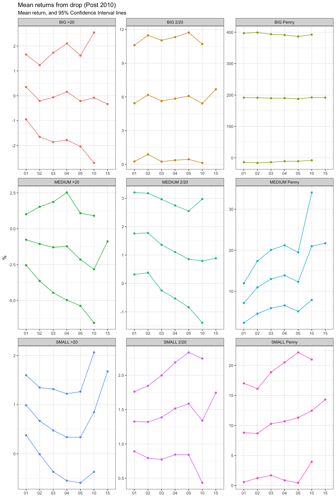

library(tidyverse) # Load ggplot2, dplyr, and all the other tidyverse packages## ── Attaching packages ────────────────────────────────────────────────────────────── tidyverse 1.3.0 ──## ✓ ggplot2 3.3.2 ✓ purrr 0.3.4
## ✓ tibble 3.0.3 ✓ dplyr 1.0.2
## ✓ tidyr 1.1.2 ✓ stringr 1.4.0
## ✓ readr 1.4.0 ✓ forcats 0.5.0## ── Conflicts ───────────────────────────────────────────────────────────────── tidyverse_conflicts() ──
## x dplyr::filter() masks stats::filter()
## x dplyr::lag() masks stats::lag()library(mosaic)## Registered S3 method overwritten by 'mosaic':
## method from
## fortify.SpatialPolygonsDataFrame ggplot2##
## The 'mosaic' package masks several functions from core packages in order to add
## additional features. The original behavior of these functions should not be affected by this.##
## Attaching package: 'mosaic'## The following object is masked from 'package:Matrix':
##
## mean## The following objects are masked from 'package:dplyr':
##
## count, do, tally## The following object is masked from 'package:purrr':
##
## cross## The following object is masked from 'package:ggplot2':
##
## stat## The following objects are masked from 'package:stats':
##
## binom.test, cor, cor.test, cov, fivenum, IQR, median, prop.test,
## quantile, sd, t.test, var## The following objects are masked from 'package:base':
##
## max, mean, min, prod, range, sample, sumlibrary(ggthemes)##
## Attaching package: 'ggthemes'## The following object is masked from 'package:mosaic':
##
## theme_maplibrary(GGally)## Registered S3 method overwritten by 'GGally':
## method from
## +.gg ggplot2library(readxl)
library(here)## here() starts at /Users/tommaso/Desktop/my_websitePGlibrary(skimr)##
## Attaching package: 'skimr'## The following object is masked from 'package:mosaic':
##
## n_missinglibrary(janitor)##
## Attaching package: 'janitor'## The following objects are masked from 'package:stats':
##
## chisq.test, fisher.testlibrary(broom)
library(tidyquant)## Loading required package: lubridate##
## Attaching package: 'lubridate'## The following objects are masked from 'package:base':
##
## date, intersect, setdiff, union## Loading required package: PerformanceAnalytics## Loading required package: xts## Loading required package: zoo##
## Attaching package: 'zoo'## The following objects are masked from 'package:base':
##
## as.Date, as.Date.numeric##
## Attaching package: 'xts'## The following objects are masked from 'package:dplyr':
##
## first, last##
## Attaching package: 'PerformanceAnalytics'## The following object is masked from 'package:graphics':
##
## legend## Loading required package: quantmod## Loading required package: TTR## Registered S3 method overwritten by 'quantmod':
## method from
## as.zoo.data.frame zoo## Version 0.4-0 included new data defaults. See ?getSymbols.## ══ Need to Learn tidyquant? ═══════════════════════════════════════════════════════════════════════════
## Business Science offers a 1-hour course - Learning Lab #9: Performance Analysis & Portfolio Optimization with tidyquant!
## </> Learn more at: https://university.business-science.io/p/learning-labs-pro </>library(infer)##
## Attaching package: 'infer'## The following objects are masked from 'package:mosaic':
##
## prop_test, t_testlibrary(openintro)## Loading required package: airports## Loading required package: cherryblossom## Loading required package: usdata##
## Attaching package: 'openintro'## The following object is masked from 'package:mosaic':
##
## dotPlot## The following objects are masked from 'package:lattice':
##
## ethanol, lsegmentslibrary(tidyquant)
library(stringr)big_post <- read.csv("big_drop_post_2010_.csv")
medium_post <- read.csv("medium_drop_post_2010_.csv")
small_post <- read.csv("small_drop_post_2010_.csv")
big_pre <- read.csv("big_drop_pre_2010_.csv")
medium_pre <- read.csv("medium_drop_pre_2010_.csv")
small_pre <- read.csv("small_drop_pre_2010_.csv")## Data manipulation, cleaning and grouping
##POST
big_post <- big_post %>%
mutate(type="BIG")
medium_post <- medium_post %>%
mutate(type = "MEDIUM")
small_post <- small_post %>%
mutate(type="SMALL")
temp <- big_post %>% ## counts number of entry for each Company and filters out Comp with number of entries not equal to a multiple of eight (errors due to data handling in previous file)
group_by(Company)%>%
summarise(count = n())%>%
filter((count%%8)==0)## `summarise()` ungrouping output (override with `.groups` argument)big_post <- big_post %>%
filter(Company %in% temp$Company) #eliminate companies from main dataframe
big_post$days_drop = c(0:5,10,15) #adds column with number of days from each drop in price
temp <- medium_post %>%
group_by(Company)%>%
summarise(count = n())%>%
filter((count%%8)==0)## `summarise()` ungrouping output (override with `.groups` argument)medium_post <- medium_post %>%
filter(Company %in% temp$Company)
medium_post$days_drop = c(0:5,10,15)
temp <- small_post %>%
group_by(Company)%>%
summarise(count = n())%>%
filter((count%%8)==0)## `summarise()` ungrouping output (override with `.groups` argument)small_post <- small_post %>%
filter(Company %in% temp$Company)
small_post$days_drop = c(0:5,10,15)
## PRE
big_pre <- big_pre %>% #add type for future filtering and grouping
mutate(type="BIG")
medium_pre <- medium_pre %>%
mutate(type = "MEDIUM")
small_pre <- small_pre %>%
mutate(type="SMALL")
temp <- big_pre %>% ## counts number of entry for each Company and filters out Comp with number of entries not equal to a multiple of eight (errors due to data handling in previous file)
group_by(Company)%>%
summarise(count = n())%>%
filter((count%%8)==0)## `summarise()` ungrouping output (override with `.groups` argument)big_pre <- big_pre %>%
filter(Company %in% temp$Company) #eliminate companies from main dataframe
big_pre$days_drop = c(0:5,10,15)
temp <- medium_pre %>%
group_by(Company)%>%
summarise(count = n())%>%
filter((count%%8)==0)## `summarise()` ungrouping output (override with `.groups` argument)medium_pre <- medium_pre %>%
filter(Company %in% temp$Company)
medium_pre$days_drop = c(0:5,10,15)
temp <- small_pre %>%
group_by(Company)%>%
summarise(count = n())%>%
filter((count%%8)==0)## `summarise()` ungrouping output (override with `.groups` argument)small_pre <- small_pre %>%
filter(Company %in% temp$Company)
small_pre$days_drop = c(0:5,10,15)
#from previous version: some dataframes have misplaced data imported from main data reading file, next chunk is going to clean it"%ni%" <- Negate("%in%") #function needed to filter data
##POST
temp <- big_post %>% #eliminates entries with a drop higher then -60% from the data frame
filter(days_drop == 0 & return < -60)
big_post <- big_post %>%
filter(Company %in% temp$Company)
check <- big_post%>% #visually inspect to make sure drops are in the right interval
filter(days_drop ==0)
temp <- medium_post %>% #eliminates entries with a drop higher then -40% and lower than -60%
filter(days_drop == 0)
temp <- temp %>%
filter(return < -60 | return > -40)
medium_post <- medium_post %>%
filter(Company %ni% temp$Company)
check <- medium_post%>% #visually inspect to make sure drops are in the right interval
filter(days_drop ==0)
temp <- small_post %>% #eliminates entries with a drop higher then -20% and lower than -40%
filter(days_drop == 0)
temp <- temp %>%
filter(return < -40 | return > -20)
small_post <- small_post %>%
filter(Company %ni% temp$Company)
check <- small_post%>% #visually inspect to make sure drops are in the right interval
filter(days_drop ==0)
## PRE
temp <- big_pre %>% #eliminates entries with a drop higher then -60% from the data frame
filter(days_drop == 0 & return < -60)
big_pre <- big_pre %>%
filter(Company %in% temp$Company)
check <- big_pre%>% #visually inspect to make sure drops are in the right interval
filter(days_drop ==0)
temp <- medium_pre %>% #eliminates entries with a drop higher then -40% and lower than -60%
filter(days_drop == 0)
temp <- temp %>%
filter(return < -60 | return > -40)
medium_pre <- medium_pre %>%
filter(Company %ni% temp$Company)
check <- medium_pre%>% #visually inspect to make sure drops are in the right interval
filter(days_drop ==0)
temp <- small_pre %>% #eliminates entries with a drop higher then -20% and lower than -40%
filter(days_drop == 0)
temp <- temp %>%
filter(return < -40 | return > -20)
small_pre <- small_pre %>%
filter(Company %ni% temp$Company)
check <- small_pre%>% #visually inspect to make sure drops are in the right interval
filter(days_drop ==0)#data grouping and adding relevant variables for analysis
#new variable to group based on price range
#new variable to track return from day of drop
post <- rbind(big_post, medium_post, small_post)
post$price_range =NA
for(i in 1:length(post$price_range)){
if(post$days_drop[i] ==0){
if(post$Close[i]<2){
post$price_range[i]="Penny"
post$price_range[i+1]="Penny"
post$price_range[i+2]="Penny"
post$price_range[i+3]="Penny" #keep the same price range based on day of drop
post$price_range[i+4]="Penny"
post$price_range[i+5]="Penny"
post$price_range[i+6]="Penny"
post$price_range[i+7]="Penny"
}
if(post$Close[i]>=2 & post$Close[i]<20){
post$price_range[i]="2/20"
post$price_range[i+1]="2/20"
post$price_range[i+2]="2/20"
post$price_range[i+3]="2/20" #keep the same price range based on day of drop
post$price_range[i+4]="2/20"
post$price_range[i+5]="2/20"
post$price_range[i+6]="2/20"
post$price_range[i+7]="2/20"
}
if(post$Close[i]>=20){
post$price_range[i]=">20"
post$price_range[i+1]=">20"
post$price_range[i+2]=">20"
post$price_range[i+3]=">20" #keep the same price range based on day of drop
post$price_range[i+4]=">20"
post$price_range[i+5]=">20"
post$price_range[i+6]=">20"
post$price_range[i+7]=">20"
}
}
}
pre <- rbind(big_pre, medium_pre, small_pre)
pre$price_range =NA
for(i in 1:length(pre$price_range)){
if(pre$days_drop[i] ==0){
if(pre$Close[i]<2){
pre$price_range[i]="Penny"
pre$price_range[i+1]="Penny"
pre$price_range[i+2]="Penny"
pre$price_range[i+3]="Penny" #keep the same price range based on day of drop
pre$price_range[i+4]="Penny"
pre$price_range[i+5]="Penny"
pre$price_range[i+6]="Penny"
pre$price_range[i+7]="Penny"
}
if(pre$Close[i]>=2 & pre$Close[i]<20){
pre$price_range[i]="2/20"
pre$price_range[i+1]="2/20"
pre$price_range[i+2]="2/20"
pre$price_range[i+3]="2/20" #keep the same price range based on day of drop
pre$price_range[i+4]="2/20"
pre$price_range[i+5]="2/20"
pre$price_range[i+6]="2/20"
pre$price_range[i+7]="2/20"
}
if(pre$Close[i]>=20){
pre$price_range[i]=">20"
pre$price_range[i+1]=">20"
pre$price_range[i+2]=">20"
pre$price_range[i+3]=">20" #keep the same price range based on day of drop
pre$price_range[i+4]=">20"
pre$price_range[i+5]=">20"
pre$price_range[i+6]=">20"
pre$price_range[i+7]=">20"
}
}
}
post <- post %>%
mutate(return_from_drop = NA)
for (i in 1:length(post$return_from_drop)){
if(post$days_drop[i]==0){post$return_from_drop[i] = 0}
if(post$days_drop[i]==1){post$return_from_drop[i] = (post$Close[i]/post$Close[i-1]-1)*100}
if(post$days_drop[i]==2){post$return_from_drop[i] = (post$Close[i]/post$Close[i-2]-1)*100}
if(post$days_drop[i]==3){post$return_from_drop[i] = (post$Close[i]/post$Close[i-3]-1)*100}
if(post$days_drop[i]==4){post$return_from_drop[i] = (post$Close[i]/post$Close[i-4]-1)*100}
if(post$days_drop[i]==5){post$return_from_drop[i] = (post$Close[i]/post$Close[i-5]-1)*100}
if(post$days_drop[i]==10){post$return_from_drop[i] = (post$Close[i]/post$Close[i-6]-1)*100}
if(post$days_drop[i]==15){post$return_from_drop[i] = (post$Close[i]/post$Close[i-7]-1)*100}
}
pre <- pre %>%
mutate(return_from_drop = NA)
for (i in 1:length(pre$return_from_drop)){
if(pre$days_drop[i]==0){pre$return_from_drop[i] = 0}
if(pre$days_drop[i]==1){pre$return_from_drop[i] = (pre$Close[i]/pre$Close[i-1]-1)*100}
if(pre$days_drop[i]==2){pre$return_from_drop[i] = (pre$Close[i]/pre$Close[i-2]-1)*100}
if(pre$days_drop[i]==3){pre$return_from_drop[i] = (pre$Close[i]/pre$Close[i-3]-1)*100}
if(pre$days_drop[i]==4){pre$return_from_drop[i] = (pre$Close[i]/pre$Close[i-4]-1)*100}
if(pre$days_drop[i]==5){pre$return_from_drop[i] = (pre$Close[i]/pre$Close[i-5]-1)*100}
if(pre$days_drop[i]==10){pre$return_from_drop[i] = (pre$Close[i]/pre$Close[i-6]-1)*100}
if(pre$days_drop[i]==15){pre$return_from_drop[i] = (pre$Close[i]/pre$Close[i-7]-1)*100}
}#pivot wider
#create ID variable to separate entries
post <- post%>%
mutate(ID = NA)
k=0
for(i in 1:length(post$ID)){
if(post$days_drop[i]==0){
k=k+1
}
post$ID[i]=k
}
#now pivot wider in new dataframe
post_wider <- post %>%
select(ID, Company, days_drop, Close, Open, return_from_drop, type, price_range)%>%
pivot_wider(!Company, names_from = days_drop , values_from = c(Close, Open, return_from_drop))
pre <- pre%>%
mutate(ID = NA)
k=0
for(i in 1:length(pre$ID)){
if(pre$days_drop[i]==0){
k=k+1
}
pre$ID[i]=k
}
pre_wider <- pre %>%
select(ID, Company, days_drop, Close, Open, return_from_drop, type, price_range)%>%
pivot_wider(!Company, names_from = days_drop , values_from = c(Close, Open, return_from_drop))post_summary <- post_wider %>% ## create 95% CIs for return from drop variable
group_by(type,price_range)%>%
summarise(observation=n(),mean_01 = mean(return_from_drop_1), u01 = mean_01 + qnorm(.975)*sd(return_from_drop_1)/sqrt(observation), l01=mean_01 - qnorm(.975)*sd(return_from_drop_1)/sqrt(observation) , mean_02 = mean(return_from_drop_2), u02 = mean_02 + qnorm(.975)*sd(return_from_drop_2)/sqrt(observation), l02=mean_02 - qnorm(.975)*sd(return_from_drop_2)/sqrt(observation), mean_03 = mean(return_from_drop_3),u03 = mean_03 + qnorm(.975)*sd(return_from_drop_3)/sqrt(observation), l03=mean_03 - qnorm(.975)*sd(return_from_drop_3)/sqrt(observation),mean_04 = mean(return_from_drop_4),u04 = mean_04 + qnorm(.975)*sd(return_from_drop_4)/sqrt(observation), l04=mean_04 - qnorm(.975)*sd(return_from_drop_4)/sqrt(observation),mean_05 = mean(return_from_drop_5),u05 = mean_05 + qnorm(.975)*sd(return_from_drop_5)/sqrt(observation), l05=mean_05 - qnorm(.975)*sd(return_from_drop_5)/sqrt(observation),mean_10 = mean(return_from_drop_10),u10 = mean_10 + qnorm(.975)*sd(return_from_drop_10)/sqrt(observation), l10=mean_10 - qnorm(.975)*sd(return_from_drop_10)/sqrt(observation),mean_15= mean(return_from_drop_15,u15 = mean_15 + qnorm(.975)*sd(return_from_drop_15)/sqrt(observation), l15=mean_15 - qnorm(.975)*sd(return_from_drop_15)/sqrt(observation)))## `summarise()` regrouping output by 'type' (override with `.groups` argument)pre_summary <- pre_wider %>%
group_by(type,price_range)%>%
summarise(observation=n(),mean_01 = mean(return_from_drop_1), u01 = mean_01 + qnorm(.975)*sd(return_from_drop_1)/sqrt(observation), l01=mean_01 - qnorm(.975)*sd(return_from_drop_1)/sqrt(observation) , mean_02 = mean(return_from_drop_2), u02 = mean_02 + qnorm(.975)*sd(return_from_drop_2)/sqrt(observation), l02=mean_02 - qnorm(.975)*sd(return_from_drop_2)/sqrt(observation), mean_03 = mean(return_from_drop_3),u03 = mean_03 + qnorm(.975)*sd(return_from_drop_3)/sqrt(observation), l03=mean_03 - qnorm(.975)*sd(return_from_drop_3)/sqrt(observation),mean_04 = mean(return_from_drop_4),u04 = mean_04 + qnorm(.975)*sd(return_from_drop_4)/sqrt(observation), l04=mean_04 - qnorm(.975)*sd(return_from_drop_4)/sqrt(observation),mean_05 = mean(return_from_drop_5),u05 = mean_05 + qnorm(.975)*sd(return_from_drop_5)/sqrt(observation), l05=mean_05 - qnorm(.975)*sd(return_from_drop_5)/sqrt(observation),mean_10 = mean(return_from_drop_10),u10 = mean_10 + qnorm(.975)*sd(return_from_drop_10)/sqrt(observation), l10=mean_10 - qnorm(.975)*sd(return_from_drop_10)/sqrt(observation),mean_15= mean(return_from_drop_15,u15 = mean_15 + qnorm(.975)*sd(return_from_drop_15)/sqrt(observation), l15=mean_15 - qnorm(.975)*sd(return_from_drop_15)/sqrt(observation)))## `summarise()` regrouping output by 'type' (override with `.groups` argument)graphpost <- post_summary %>%
mutate(identifier = paste0(type," ", price_range))%>%
ungroup()%>%
select(-observation, -type,-price_range)%>%
pivot_longer(!identifier, names_to ="STAT", values_to ="Value")%>%
mutate(groupings = str_sub(STAT,1,1), days_drop = str_sub(STAT,-2,-1))
ggplot(graphpost, aes(x=days_drop, color=identifier, group =groupings))+
geom_line(aes(y= Value))+
geom_point(aes(y=Value))+
facet_wrap(~identifier, scales = "free")+
labs(title = "Mean returns from drop (Post 2010)", subtitle = "Mean return, and 95% Confidence Interval lines", x="", y="%")+
theme_bw()+
theme(legend.position = "none")
graphpre <- pre_summary %>%
mutate(identifier = paste0(type," ", price_range))%>%
ungroup()%>%
select(-observation, -type,-price_range)%>%
pivot_longer(!identifier, names_to ="STAT", values_to ="Value")%>%
mutate(groupings = str_sub(STAT,1,1), days_drop = str_sub(STAT,-2,-1))
ggplot(graphpre, aes(x=days_drop, color=identifier, group =groupings))+
geom_line(aes(y= Value))+
geom_point(aes(y=Value))+
facet_wrap(~identifier, scales = "free")+
labs(title = "Mean returns from drop (Pre 2010)", subtitle = "Mean return, and 95% Confidence Interval lines", x="", y="%")+
theme_bw()+
theme(legend.position = "none")